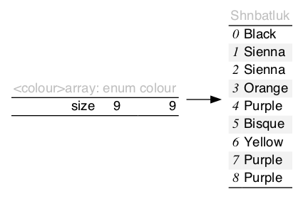

<t>array
struct <t>array { size_t size, capacity; <pT>type *data; };
Manages the array field data which has size elements. The space is indexed up to capacity, which is at least size.

Header ../../src/array.h; examples ../../test/test_array.c.

<t>array is a dynamic array that stores contiguous <pT>type. Resizing may be necessary when increasing the size of the array; this incurs amortised cost. As such, the contents are not stable.
* src/iterate.h: definingHAVE_ITERATE_H supplies functions.<t> that satisfies C naming conventions when mangled and a valid tag-type, <pT>type, associated therewith; required.array.h multiple times with ARRAY_EXPECT_TRAIT and then subsequently including the name in ARRAY_TRAIT.typedef int(*<pT>predicate_fn)(const <pT>type *);
src/iterate.h: Returns a boolean given read-only.
typedef void(*<pT>to_string_fn)(const <pT>type *, char(*)[12]);
The type of the required <tr>to_string. Responsible for turning the read-only argument into a 12-max-char output string.
typedef int(*<pT>compare_fn)(const <pT>type *restrict a, const <pT>type *restrict b);
src/compare.h: The type of the required <tr>compare. Three-way comparison on a totally order set; returns an integer value less than, equal to, greater than zero, if a < b, a == b, a > b, respectively.
typedef int(*<pT>bipredicate_fn)(<pT>type *restrict, <pT>type *restrict);
src/compare.h: The type of the required <tr>is_equal. Returns a symmetric boolean given two read-only elements.
typedef int(*<pT>biaction_fn)(<pT>type *restrict, <pT>type *restrict);
src/compare.h: Returns a boolean given two modifiable arguments.
struct <t>array { size_t size, capacity; <pT>type *data; };
Manages the array field data which has size elements. The space is indexed up to capacity, which is at least size.
| Modifiers | Function Name | Argument List |
|---|---|---|
| static struct <t>array | <t>array | |
| static void | <t>array_ | a |
| static int | <T>reserve | a, min |
| static <pT>type * | <T>buffer | a, n |
| static <pT>type * | <T>append | a, n |
| static <pT>type * | <T>insert | a, n, at |
| static <pT>type * | <T>new | a |
| static void | <T>remove | a, element |
| static void | <T>lazy_remove | a, datum |
| static void | <T>clear | a |
| static <pT>type * | <T>peek | a |
| static <pT>type * | <T>pop | a |
| static int | <T>splice | a, b, i0, i1 |
| static <pT>type * | <TR>any | box, predicate |
| static void | <TR>each | box, action |
| static void | <TR>if_each | box, predicate, action |
| static int | <TR>copy_if | dst, src, copy |
| static void | <TR>keep_if | box, keep, destruct |
| static void | <TR>trim | box, predicate |
| static const char * | <TR>to_string | box |
| static int | <TR>compare | a, b |
| static size_t | <TR>lower_bound | box, element |
| static size_t | <TR>upper_bound | box, element |
| static int | <TR>insert_after | box, element |
| static void | <TR>sort | box |
| static void | <TR>reverse | box |
| static int | <TR>is_equal | a, b |
| static void | <TR>unique_merge | box, merge |
| static void | <TR>unique | box |
static struct <t>array <t>array(void)
Zeroed data (not all-bits-zero) is initialized, as well.
static void <t>array_(struct <t>array *const a)
If a is not null, destroys and returns it to idle.
static int <T>reserve(struct <t>array *const a, const size_t min)
Ensures min capacity of a. Invalidates pointers in a.
errno will be set.size_t or realloc doesn't follow POSIX.static <pT>type *<T>buffer(struct <t>array *const a, const size_t n)
The capacity of a will be increased to at least n elements beyond the size. Invalidates any pointers in a.
a is idle and buffer is zero, a null pointer is returned, otherwise null indicates an error.static <pT>type *<T>append(struct <t>array *const a, const size_t n)
Adds n elements to the back of a. It will invalidate pointers in a if n is greater than the buffer space.
a is idle and n is zero, a null pointer will be returned, otherwise null indicates an error.append from BOX_CONTIGUOUSstatic <pT>type *<T>insert(struct <t>array *const a, const size_t n, const size_t at)
Adds n un-initialised elements at position at in a. It will invalidate any pointers in a if the buffer holds too few elements.
a.size; if a.size, this function behaves as <T>append.n elements.static <pT>type *<T>new(struct <t>array *const a)
a. The buffer space holds at least one element, or it may invalidate pointers in a.static void <T>remove(struct <t>array *const a, <pT>type *const element)
Removes element from a. Do not attempt to remove an element that is not in a.
a.size).static void <T>lazy_remove(struct <t>array *const a, <pT>type *const datum)
Removes datum from a and replaces it with the tail. Do not attempt to remove an element that is not in a.
static void <T>clear(struct <t>array *const a)
Sets a to be empty. That is, the size of a will be zero, but if it was previously in an active non-idle state, it continues to be.
static <pT>type *<T>peek(const struct <t>array *const a)
a is empty.static <pT>type *<T>pop(struct <t>array *const a)
a that is removed or null if the array is empty.static int <T>splice(struct <t>array *restrict const a, const struct <t>array *restrict const b, const size_t i0, const size_t i1)
Indices [i0, i1) of a will be replaced with a copy of b.
a.static <pT>type *<TR>any(const <pT>box *const box, const <pTR>predicate_fn predicate)
src/iterate.h: Iterates through box and calls predicate until it returns true.
predicate that returned true, or, if the statement is false on all, null.box.size) × Ο(predicate)static void <TR>each(<pT>box *const box, const <pTR>action_fn action)
src/iterate.h: Iterates through box and calls action on all the elements. Differs calling action until the iterator is one-ahead, so can delete elements as long as it doesn't affect the next, (specifically, a linked-list.)
box|) × Ο(action)static void <TR>if_each(<pT>box *const box, const <pTR>predicate_fn predicate, const <pTR>action_fn action)
src/iterate.h: Iterates through box and calls action on all the elements for which predicate returns true.
box.size) × (Ο(predicate) + Ο(action))static int <TR>copy_if(<pT>box *restrict const dst, const <pTR>box *restrict const src, const <pTR>predicate_fn copy)
src/iterate.h, pT_CONTIGUOUS: For all elements of src, calls copy, and if true, lazily copies the elements to dst. dst and src can not be the same but src can be null, (in which case, it does nothing.)
src|) × Ο(copy)static void <TR>keep_if(<pT>box *const box, const <pTR>predicate_fn keep, const <pTR>action_fn destruct)
src/iterate.h: For all elements of box, calls keep, and if false, if contiguous, lazy deletes that item, if not, eagerly. Calls destruct if not-null before deleting.
box|) (× O(keep) + O(destruct))static void <TR>trim(<pT>box *const box, const <pTR>predicate_fn predicate)
src/iterate.h, pT_CONTIGUOUS: Removes at either end of box the things that predicate, if it exists, returns true.
box.size) × Ο(predicate)static const char *<TR>to_string(const <pT>box *const box)
src/to_string.h: print the contents of box in a static string buffer of 256 bytes, with limitations of only printing 4 things in a single sequence point.
static int <TR>compare(const <pT>box *restrict const a, const <pT>box *restrict const b)
src/compare.h, COMPARE: Lexicographically compares a to b. Both can be null, with null values before everything.
a < b: negative; a == b: zero; a > b: positive.|a| & |b|)static size_t <TR>lower_bound(const <pT>box *const box, const <pT>type *const element)
src/compare.h, COMPARE, BOX_ACCESS: box should be partitioned true/false with less-then element.
a that is not less than cursor.a.size)static size_t <TR>upper_bound(const <pT>box *const box, const <pT>type *const element)
src/compare.h, COMPARE, BOX_ACCESS: box should be partitioned false/true with greater-than or equal-to element.
box that is greater than element.box|)static int <TR>insert_after(<pT>box *const box, const <pT>type *const element)
src/compare.h, COMPARE, BOX_CONTIGUOUS: Copies element at the upper bound of a sorted box.
a.size)static void <TR>sort(<pT>box *const box)
src/compare.h, COMPARE, BOX_CONTIGUOUS: Sorts box by qsort, (which has a high-context-switching cost, but is easy.)
box| log |box|)static void <TR>reverse(<pT>box *const box)
src/compare.h, COMPARE, BOX_CONTIGUOUS: Sorts box in reverse by qsort.
box| log |box|)static int <TR>is_equal(const <pT>box *restrict const a, const <pT>box *restrict const b)
a piecewise equals b, which both can be null.a| & |b|)static void <TR>unique_merge(<pT>box *const box, const <pT>biaction_fn merge)
src/compare.h, BOX_CONTIGUOUS: Removes consecutive duplicate elements in box lazily.
(x, y)->(x), if true (x,y)->(y). More complex functions, (x, y)->(x+y) can be simulated by mixing the two in the value returned. Can be null: behaves like false, always deleting the second element.box|) × Ο(merge)static void <TR>unique(<pT>box *const box)
src/compare.h, BOX_CONTIGUOUS: Removes consecutive duplicate elements in box.
box|)2016 Neil Edelman, distributed under the terms of the MIT License.